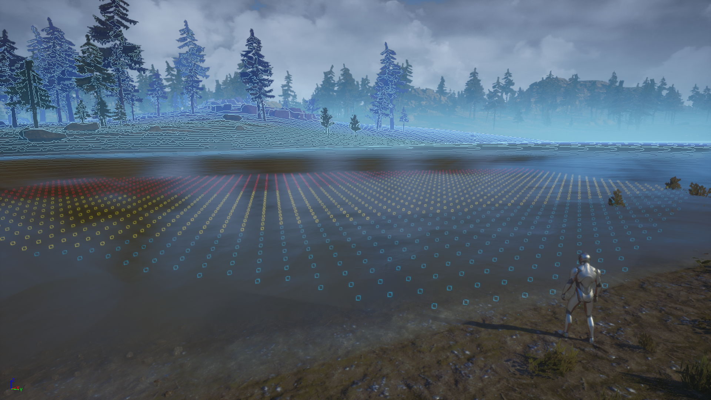

Luca Gabellini
Software developer
Projects

Terrain Scan ( from
"Death Stranding"
)
A gameplay implementation of the terrain scan mechanic from the game
"Death Stranding"
(2019) in the Unreal Engine 5.
Keywords: gameplay programming, shader programming, VFX